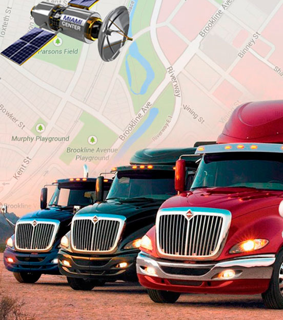

Plataforma de Rastreo Satelital (GPS)
ASMID es un sistema polifuncional de seguimiento GPS de transporte, unidades móviles y estacionarias. Las soluciones basadas en el sistema de monitoreo GPS ASMID permiten prestar servicios eficientes de geolocalización de vehículos por GPS, incluyendo el análisis exhaustivo y la rendición de cuentas para los clientes finales.


Condiciones atractivas de cooperación, han hecho que más de 950 operadores eligieran ASMID
Posibilidades infinitas para el seguimiento GPS
Sistema de informes eficaz
Soporte técnico las 24 horas al día, los 7 días de la semana
Más de 10 años de presencia en el mercado internacional abarcando hasta 130 países